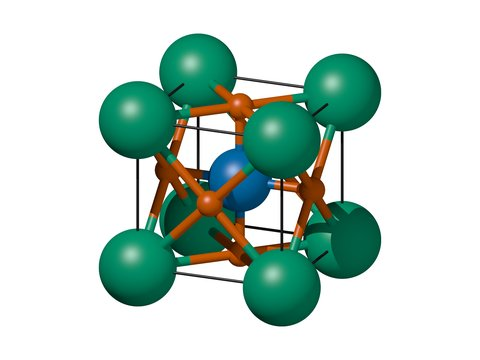
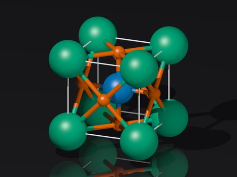
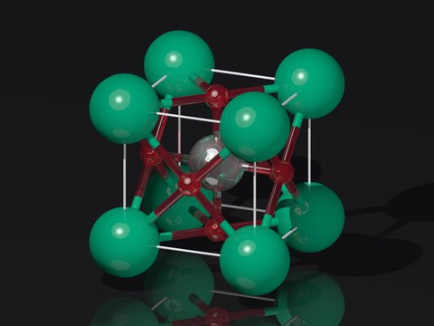
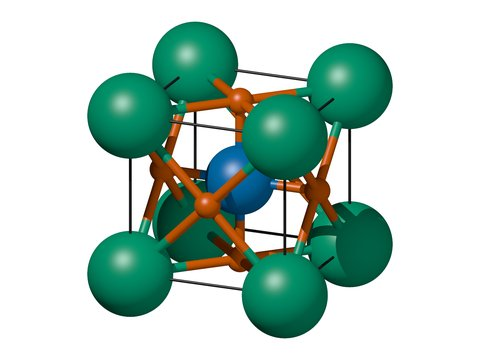
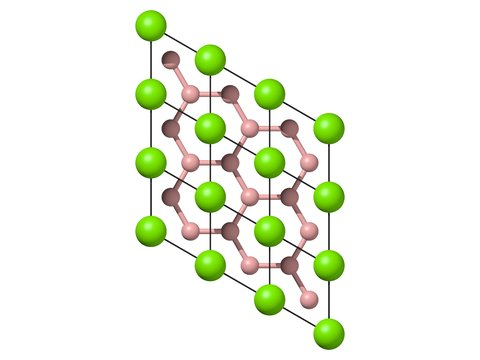
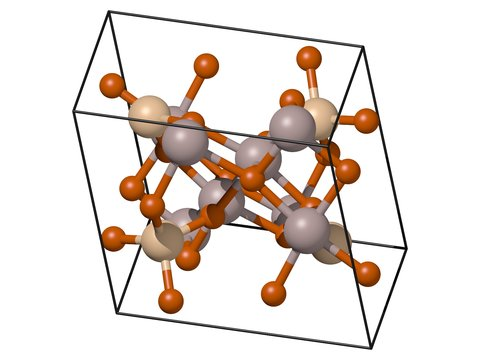
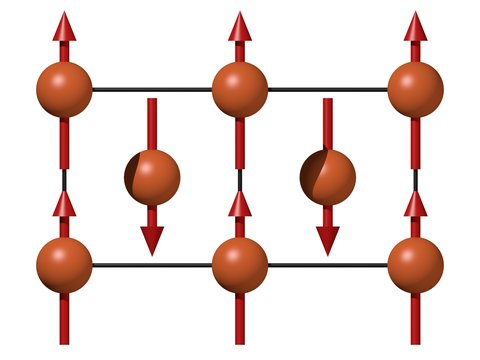

Figure gallery¶
Seven figures made by Ycrystal and POV-Ray 3.7 from the inputs in
examples/publication/, all by the command line. They show:
- a restrained style for a journal page;
- the same figure with ray-traced lighting and materials;
- one style applied to several compositions with an explicit element mapping;
- a low-symmetry mineral;
- a synthetic magnetic-moment illustration.
The thumbnails below are 480 px wide JPEG copies, downscaled from the 1600 × 1200 PNG renders of the run recorded at the end of this page. They are not mock-ups.
Lighting and materials, with geometry and camera fixed¶
| Paper style | Cover environment only | Cover environment and materials |
|---|---|---|
 |
 |
 |
The left image is rendered from SrTiO3.cif with styles/paper.ycstyle. Its
snapshot srtio3.ycrystal is then rendered with styles/cover.ycstyle:
- the middle image applies only the cover's environment: a dark studio, a reflective floor, and hard shadows;
- the right image also applies its materials: ceramic Sr, chrome Ti, ruby-glass O.
A snapshot keeps its camera and image size, so the structure, camera, and size are
exactly the same in all three; tests/test_gallery.py checks this. Reflections and
refraction are computed by POV-Ray. The materials are a presentation choice, not
physical properties of the atoms.
One style, several structures¶
| SrTiO3 | BaZrO3, Sr → Ba, Ti → Zr | MgB2 |
|---|---|---|
 |
 |
| Kyanite, Al₂SiO₅ (P-1, COD 1008755) | Synthetic antiferromagnet (not a real material) |
|---|---|
 |
 |
All five come from one batch manifest, gallery.json, with the paper style:
- SrTiO3 and BaZrO3 share a visible height of 9 Å, so the larger BaZrO3 cell
(a = 4.19 Å against 3.905 Å) appears larger. BaZrO3 keeps the A and B site colours
through the explicit mapping
"element_map": {"Sr": "Ba", "Ti": "Zr"}. The mapping is a presentation choice, not chemical equivalence. - MgB2 (3 × 3 × 1 cells, looking down c, showing the boron honeycomb) and kyanite receive the style's background, lighting, size, and default material. Their elements keep their default colours, except kyanite's O, which matches the style's O. The run prints a warning for each element setting it could not use.
- The antiferromagnet is synthetic: moments of ±2.2 μB assigned by hand. It illustrates atom-attached vectors, not a real material.
Sources and licences of the structures are listed in examples/publication/README.md.
Make the figures yourself¶
python scripts/make_gallery.py --out artifacts/gallery
The script copies the inputs to a temporary folder and runs the batch manifest there.
It renders the two cover variants from the SrTiO3 snapshot and then deletes the
inputs. Next it renders every snapshot again with scripts/replay_check.py and
compares the pixels. Finally it writes the figure-methods table below
(figure-methods.md) and the list of commands it ran (commands.txt).
- On the development laptop (Linux, POV-Ray 3.7.0.10), the whole run at 1600 × 1200 took well under a minute of rendering: 9.7 s for the five batch figures, 2.6 s and 9.2 s for the two variants. All 7 replays had identical pixels.
--scale 0.25makes the same figures at a quarter of the size, for a quick check.--thumbnails docs/assets/galleryalso writes the thumbnails of this page.
To render one figure again from its snapshot, for example on another computer:
ycrystal artifacts/gallery/figures/kyanite.ycrystal --render kyanite-again.png
Figure methods¶
Written by scripts/make_gallery.py from the provenance records and snapshots of the
run on 17 November 2026 (Linux Mint 22.1 laptop, Ycrystal 0.4.0.dev0, POV-Ray
3.7.0.10.unofficial), unedited. Atoms counts the atoms of the structure, displayed
those drawn (with periodic images and repetitions). The two variants have the snapshot
srtio3.ycrystal as their input; saved means the snapshot's camera was used as it
is.
| Figure | Input | Atoms (displayed) | Size, px | Style (parts; mapping) | Camera | Key settings | Renderer |
|---|---|---|---|---|---|---|---|
| srtio3.png: SrTiO3, paper style | SrTiO3.cif | 5 (15) | 1600 × 1200 | paper.ycstyle (appearance, environment, output) | fit: default, fixed height 9 Å | white background, soft lighting; default material satin; element colours O, Sr, Ti | POV-Ray 3.7.0.10.unofficial |
| srtio3-cover-light.png: SrTiO3, same snapshot: cover environment only | srtio3.ycrystal | 5 (15) | 1600 × 1200 | cover.ycstyle (environment) | saved: saved orientation | studio_dark background, bright lighting; floor (reflection 0.35); default material satin; element colours O, Sr, Ti | POV-Ray 3.7.0.10.unofficial |
| srtio3-cover.png: SrTiO3, same snapshot: cover environment and materials | srtio3.ycrystal | 5 (15) | 1600 × 1200 | cover.ycstyle (appearance, environment) | saved: saved orientation | studio_dark background, bright lighting; floor (reflection 0.35); default material satin; O glass_ruby, Sr ceramic, Ti chrome; element colours O, Sr, Ti | POV-Ray 3.7.0.10.unofficial |
| bazro3-mapped.png: BaZrO3, paper style mapped Sr → Ba, Ti → Zr | BaZrO3.cif | 5 (15) | 1600 × 1200 | paper.ycstyle (appearance, environment, output; Sr → Ba, Ti → Zr) | fit: default, fixed height 9 Å | white background, soft lighting; default material satin; element colours Ba, O, Zr | POV-Ray 3.7.0.10.unofficial |
| mgb2.png: MgB2 3 × 3 × 1 down c, paper style (no settings for Mg, B) | MgB2-gradient.ycrystal | 3 (50) | 1600 × 1200 | paper.ycstyle (appearance, environment, output) | fit: c | white background, soft lighting; default material satin | POV-Ray 3.7.0.10.unofficial |
| kyanite.png: Kyanite Al2SiO5 (COD 1008755), paper style | kyanite-COD-1008755.cif | 32 (34) | 1600 × 1200 | paper.ycstyle (appearance, environment, output) | fit: default | white background, soft lighting; default material satin; element colours O | POV-Ray 3.7.0.10.unofficial |
| afm-synthetic.png: Synthetic antiferromagnet (not a real material), paper style | vectors-synthetic-afm.ycrystal | 2 (22) | 1600 × 1200 | paper.ycstyle (appearance, environment, output) | fit: a | white background, soft lighting; default material satin; 2 source vectors | POV-Ray 3.7.0.10.unofficial |
The scenes need the standard POV-Ray include file textures.inc for chrome and ruby
glass. It belongs to the POV-Ray installation and is not part of the inputs.